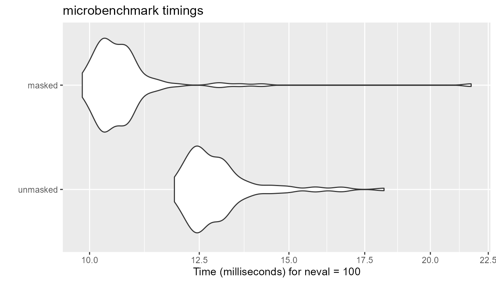
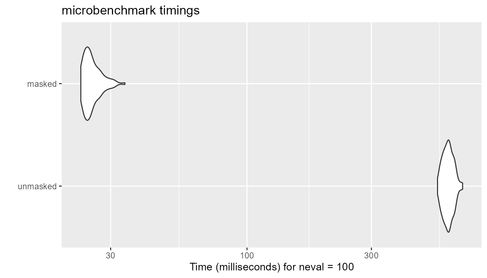

Masked Similarity Computation
Kohei Watanabe
2025-04-21
Source:vignettes/articles/masking.Rmd
masking.RmdproxyC v0.5 introduces masked similarity (or
distance) computation to improve the execution time and memory usage. In
the toy example, we compute similarity only between column vectors in
mt1 and mt2 with the same alphabetical names,
leaving all others Nan. We can achieve this by creating a
pattern matrix msk using mask() and passing it
to simil() (or dist()).
Example
require(proxyC)
require(Matrix)
mt1 <- rsparsematrix(100, 6, 1.0)
colnames(mt1) <- c("a", "a", "d", "d", "e", "e")
mt2 <- rsparsematrix(100, 5, 1.0)
colnames(mt2) <- c("a", "b", "c", "d", "e")
(msk <- mask(colnames(mt1), colnames(mt2)))
#> 6 x 5 sparse Matrix of class "lgTMatrix"
#> a b c d e
#> a | . . . .
#> a | . . . .
#> d . . . | .
#> d . . . | .
#> e . . . . |
#> e . . . . |
(sim <- simil(mt1, mt2, margin = 2, method = "cosine", mask = msk, use_nan = TRUE))
#> 6 x 5 sparse Matrix of class "dgTMatrix"
#> a b c d e
#> a 0.10463988 NaN NaN NaN NaN
#> a -0.09258201 NaN NaN NaN NaN
#> d NaN NaN NaN -0.06961173 NaN
#> d NaN NaN NaN -0.07654895 NaN
#> e NaN NaN NaN NaN -0.03211685
#> e NaN NaN NaN NaN 0.07722747Execution Times
With large matrices, we can measures the impact of masked similarity computation.
require(microbenchmark)
require(ggplot2)
mt1 <- rsparsematrix(1000L, 2600L, 0.1)
colnames(mt1) <- rep(letters, each = 100L)
mt2 <- rsparsematrix(1000L, 26L, 0.1)
colnames(mt2) <- letters
msk <- mask(colnames(mt1), colnames(mt2))Cosine Similarity
The impact of masking is limited in cosine similarity because
proxyC employs linear algebra extensively. It computes
all the similarity scores but saves values for only unmasked pairs if
method is either “cosine”, “correlation” or
“euclidean”.
bm <- microbenchmark(
unmasked = simil(mt1, mt2, margin = 2, method = "cosine", mask = NULL, drop0 = TRUE),
masked = simil(mt1, mt2, margin = 2, method = "cosine", mask = msk, drop0 = TRUE)
)
autoplot(bm)
Jaccard Similarity
Masking has the greatest impact on the execution time in other methods because proxyC computes and saves Jaccard similarity scores only for unmasked pairs. We expect to see similar performance improvement in ejaccard”, “fjaccard”, “edice”, “hamann”, “faith” and”simple matching”.
bm <- microbenchmark(
unmasked = simil(mt1, mt2, margin = 2, method = "jaccard", mask = NULL, drop0 = TRUE),
masked = simil(mt1, mt2, margin = 2, method = "jaccard", mask = msk, drop0 = TRUE)
)
autoplot(bm)
Object Sizes
Masking also dramatically reduces the sizes of similarity matrices
when use_nan = FALSE.
sim_um <- simil(mt1, mt2, margin = 2, method = "cosine", mask = NULL, use_nan = FALSE)
sim_mk <- simil(mt1, mt2, margin = 2, method = "cosine", mask = msk, use_nan = FALSE)
print(object.size(sim_um), unit = "KB")
#> 1081.2 Kb
print(object.size(sim_mk), unit = "KB")
#> 65.5 Kb